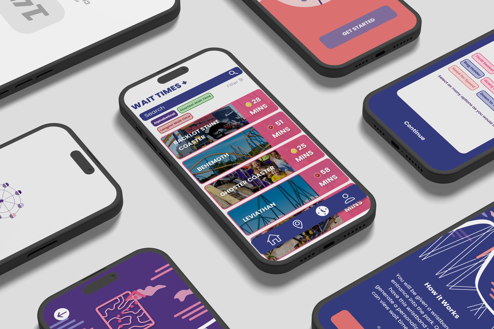
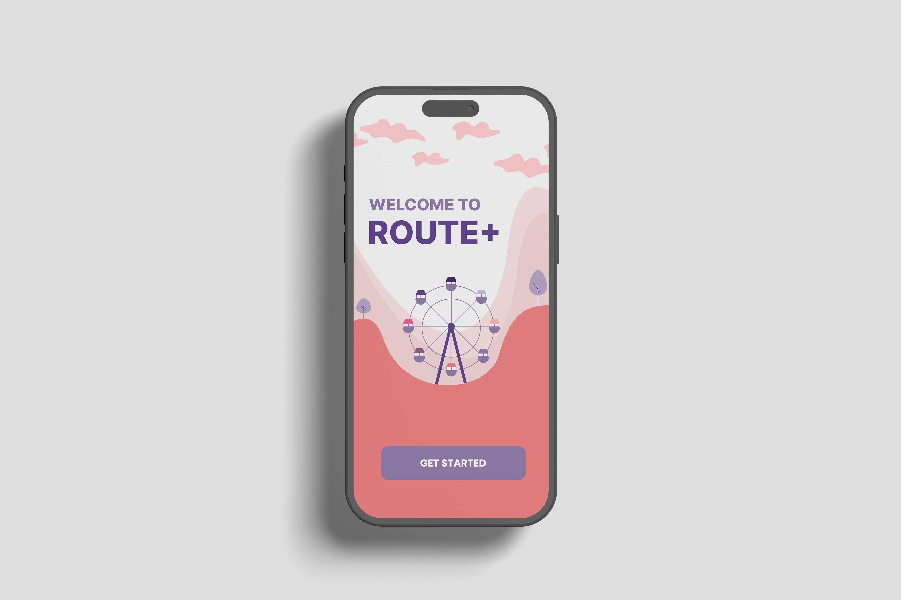
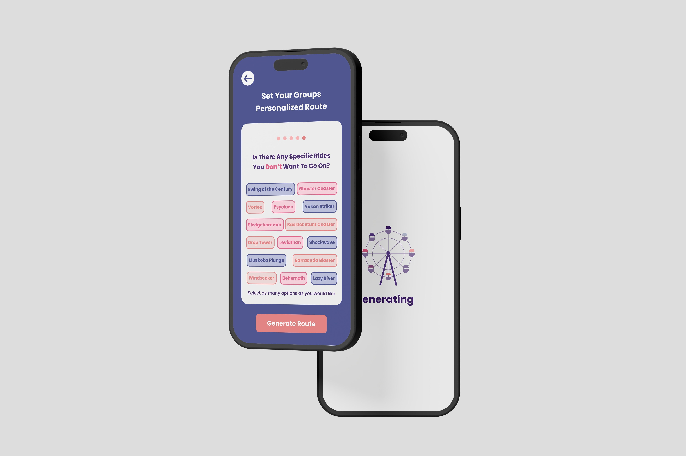
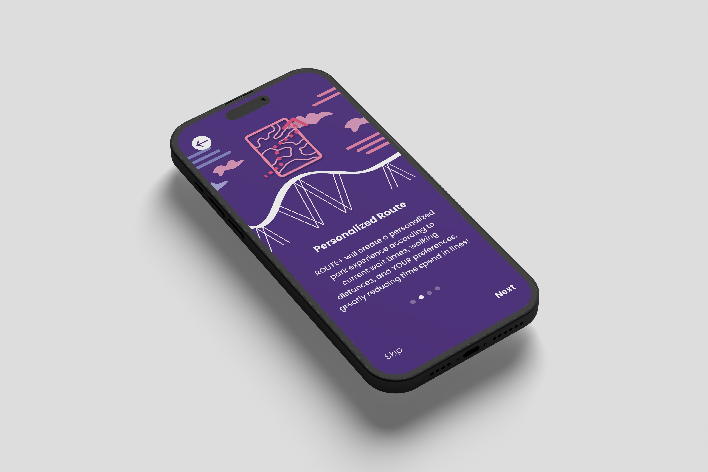

Route+
Concept app · Theme park UX & research
Less waiting. More riding.
Route+ is a concept app that improves visits to Canada's Wonderland with live wait times, personalized routes, and timely notifications, so guests spend less time in line and more time enjoying the park.
Try it yourself: Figma prototype
At a glance
Role
Product & UX design
End-to-end app design, prototyping, and iterative research from wireframes through high-fidelity flows in Figma.
Research & testing
Planned and ran usability sessions using think-aloud protocols, with synthesis in Miro, Docs, and Forms to validate assumptions and refine the experience.
The problem
Peak days mean multi-hour queues. Guests feel stuck, hot, and unsure where to go next, while the park struggles to balance crowd flow and satisfaction. We asked: how might real-time information and smarter routing reduce friction without adding operational burden?
⏱️
Friction
Long lines & guesswork
→
📱
Route+
Live data & routing
→
✨
Outcome
Smoother park days
How we got there
A phased process from insight to handoff, aligned with stakeholders and shaped by continuous testing.
1
Discover
Framed the core tension: long waits and opaque park navigation. Interviewed and surveyed visitors to map pain points, heat, uncertainty, and “where should we go now?”
2
Strategy
Aligned on reducing perceived wait and improving flow through data-driven routing. Partnered with operations and product partners to prioritize features that were feasible and high-impact.
3
Design
Shipped flows for wait times, maps, wristband-aware routes, and notifications, then redesigned for clarity as feedback came in.
4
Validate
Twenty tests across ages 18–40 tightened map legibility, type scale, and notification copy. Documented specs in Figma for a staged build.
Impact
~30% ↓ avg. wait perception
Fewer complaints tied to queueing when guests can plan and reroute in the moment.
Better crowd distribution and ride throughput when staff and guests share the same live picture of the park.
Higher satisfaction and repeat intent when the day feels under control, not left to chance.

20
Usability sessions
(ages 18–40)
4
Process phases
discover → ship
Live
Wait + map +
notifications
Research snapshot
What testing taught us
Usability runs focused on navigation, trust in wait data, and scan-to-route clarity. Here’s what rose to the top.
People liked personalized routes but needed clearer steps to scan and confirm wristbands. We simplified hierarchy and added instructional moments.
Wait data was findable, yet search and filters confused some users. They asked for ride types, areas, and short descriptions, not just minutes.
The map needed richer affordances: icons for rides and amenities, optional heat-style cues, and step-by-step directions guests could trust.
Type and contrast didn’t always pass the “sunlight and walking” test. We bumped sizes, clarified labels, and explored palettes that separate states at a glance.
Adding rides, reading notifications, and using filters needed a lighter first-run experience: less density up front and more guidance where it matters.



Design north stars
Guiding principles
1
Cut wait, lift the day
Use live data and smart routing so families and thrill-seekers alike get more rides per visit.
2
Delight through clarity
Personal tips and notifications only work if they’re timely, scannable, and easy to act on in motion.
3
Operations + guest, together
Pair visitor-facing tools with signals ops can use, so the park runs smoother while guests feel seen.
The solution
Adaptive, personal app
Behavior and preferences shape what you see, without burying the basics.
Plain-language guidance
Short instructions and visual cues so scanning, routing, and notifications never feel like a puzzle.
Moments worth returning
Targeted perks and timely prompts keep engagement high across the full park day.
Closing thoughts
Route+ was an exercise in balancing ambition with legibility. Theme parks are loud, bright, and fast-moving, and the UI had to keep up. The strongest takeaway: when wait times and maps are the product, trust and typography matter as much as the feature list. Testing didn’t just polish screens; it reordered what we surfaced first. I’d carry that same discipline into any high-traffic consumer product: proving the critical path in the messiest real-world conditions.